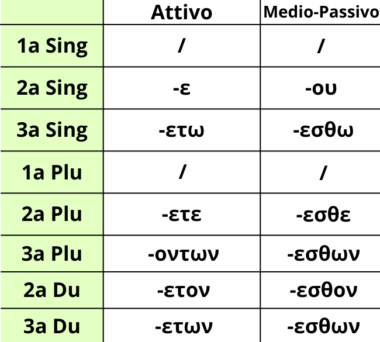

L'imperativo è il tempo verbale usato per ordinare un comando.
Esso si distingue in presente, come in italiano, e futuro. L'imperativo presente dei verbi in Greco Antico ha delle desinenze proprie e desinenze uguali al presente indicativo (Es. ετε come alla seconda persona plurale dell'indicativo presente attivo e medio-passivo), cosa che troverai anche più avanti in altri tempi verbali. Per distinguere i due tempi verbali si usano due principali strategie. La prima è la negazione, dato che nell'imperativo si usa μή mentre al presente indicativo si usa ου/ουκ/ουχ, mentre l'altra è il contesto, un po' difficile da applicare ma che funziona sempre.
Memorizza bene queste desinenze, poiché nonostante non troverai molto un imperativo quando lo trovi potresti sbagliare, specialmente con i verbi contratti.